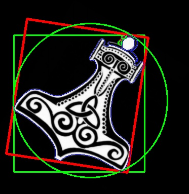

Finding Area Using Contour
Finding the contours of a square is a simple task; irregular, skewed, and rotated shapes bring the best out of the cv2.findContours utility function of OpenCV. Let’s take a look at the following image:

In a real-life application, we would be most interested in determining the bounding box of the subject, its minimum enclosing rectangle, and its circle. The cv2.findContours function in conjunction with a few other OpenCV utilities makes this very easy to accomplish:
# Import Necessary library
import cv2
import numpy as np
# Read Image
img = cv2.imread("Hammer.png")
# Obtain thresholding between 127 and 255 intensity
ret, thresh = cv2.threshold( cv2.cvtColor(img.copy(), cv2.COLOR_BGR2GRAY) ,
127, 255, cv2.THRESH_BINARY)
# Obtain contours in image with defined thresholding
image, contours, hier = cv2.findContours(thresh, cv2.RETR_EXTERNAL,
cv2.CHAIN_APPROX_SIMPLE)
for c in contours:
# find bounding box coordinates
x,y,w,h = cv2.boundingRect(c)
cv2.rectangle(img, (x,y), (x+w, y+h), (0, 255, 0), 2)
# find minimum area
rect = cv2.minAreaRect(c)
# calculate coordinates of the minimum area rectangle
box = cv2.boxPoints(rect)
# normalize coordinates to integers
box = np.int0(box)
# draw contours for box
cv2.drawContours(img, [box], 0, (0,0, 255), 3)
# calculate center and radius of minimum enclosing circle
(x,y),radius = cv2.minEnclosingCircle(c)
# cast to integers
center = (int(x),int(y))
radius = int(radius)
# Draw the circle
img = cv2.circle(img,center,radius,(0,255,0),2)
# Draw all the contours in image
cv2.drawContours(img, contours, -1, (255, 0, 0), 1)
# Save image as contour1.jpg
cv2.imwrite("contour1.jpg", img)
Output Image will be:
